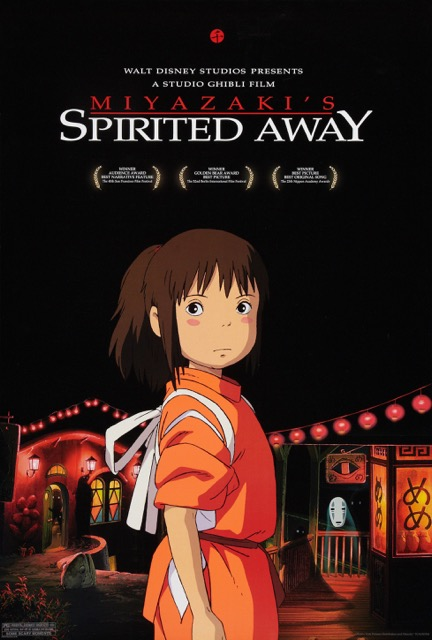

|  |
According to Wikipedia, Spirited Away is a 2001 Japanese animated fantasy film written and directed by Hayao Miyazaki, animated by Studio Ghibli and distributed by Toho. Spirited Away tells the story of Chihiro Ogino, a ten-year-old girl who, while moving to a new neighbourhood, enters the world of Kami (spirits of Japanese Shinto folklore). After her parents are turned into pigs by the witch Yubaba, Chihiro takes a job working in Yubaba's bathhouse to find a way to free herself and her parents and return to the human world.
Originally released in Japan on 20 July 2001 by distributor Toho, the film received universal acclaim, grossing $395.8 million at the worldwide box office. Accordingly, it became the most successful and highest-grossing film in Japanese history, with a total of ¥31.68 billion ($305 million).
Spirited Away has been regarded by critics as one of the greatest films of the 21st century and is often cited among the best animated films ever made. It won the Academy Award for Best Animated Feature at the 75th Academy Awards, making it the first hand-drawn and non-English-language animated film to win the award.
|